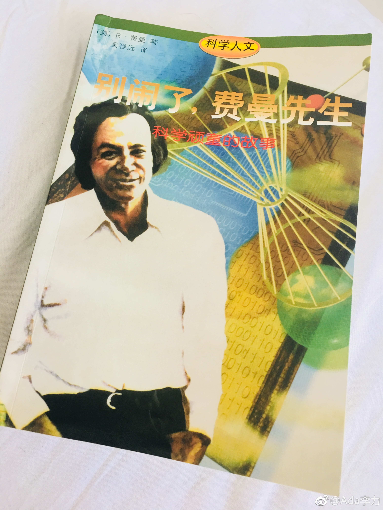

#读书#《别闹了，费曼先生》是我买来给姣姣读的。自己一翻开，就放不下手了，一口气读完，很棒的阅读体验。
当然很羡慕主人公，凭借强烈好奇心，超群的智商，以及科学态度，费曼在几个领域都玩得很开心，玩出花样，也玩出成果。
他提过自己经历的心理危机，有些轻描淡写。在普林斯顿教学期间，有段之间对物理，对科研失去兴趣，只想躲在图书馆看《天方夜谭》，直到有一天他有了这个高明的想法：“你完全没有责任要做到其他人觉得你应该做到的地步。我没有责任要符合他们的期望，这是他们的过错，可不是我失败了”。之后，费曼的好奇心回来了，只是为了好玩而做物理。
书中有不少费曼揭穿愚蠢的事例，涉及到军方，政府，教育，宗教等等。从这些可笑的事例中，会发现，那些占据重要职位和话语权的专家要员等人，不少是草包笨蛋呢。
我喜欢书中最后的结尾：
“因此我只有一个希望：你们能够找到一个地方，在那里自由自在地坚持我提到过的品德；而且不会由于要维持你在组织里的地位，或是迫于经济压力。而丧失你的品德。
我诚心祝愿，你们能够获得这样的自由”
当然很羡慕主人公，凭借强烈好奇心，超群的智商，以及科学态度，费曼在几个领域都玩得很开心，玩出花样，也玩出成果。
他提过自己经历的心理危机，有些轻描淡写。在普林斯顿教学期间，有段之间对物理，对科研失去兴趣，只想躲在图书馆看《天方夜谭》，直到有一天他有了这个高明的想法：“你完全没有责任要做到其他人觉得你应该做到的地步。我没有责任要符合他们的期望，这是他们的过错，可不是我失败了”。之后，费曼的好奇心回来了，只是为了好玩而做物理。
书中有不少费曼揭穿愚蠢的事例，涉及到军方，政府，教育，宗教等等。从这些可笑的事例中，会发现，那些占据重要职位和话语权的专家要员等人，不少是草包笨蛋呢。
我喜欢书中最后的结尾：
“因此我只有一个希望：你们能够找到一个地方，在那里自由自在地坚持我提到过的品德；而且不会由于要维持你在组织里的地位，或是迫于经济压力。而丧失你的品德。
我诚心祝愿，你们能够获得这样的自由”
- 